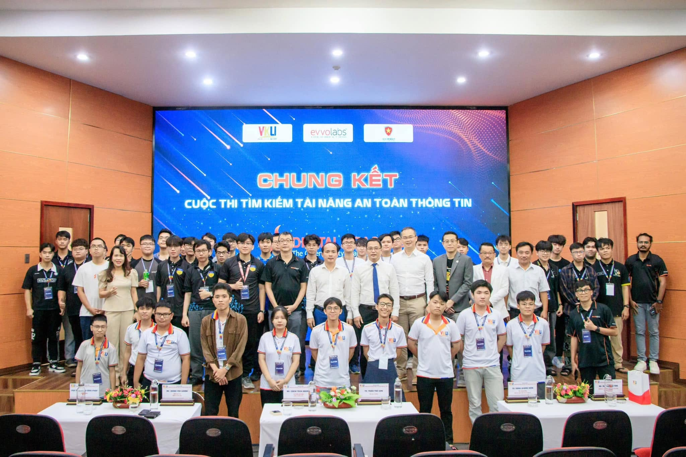

Tại sao nên học mạng? – Lý do từ một người đang trên hành trình

“Học mạng để làm gì? Ra trường có việc làm không?” Đó là câu hỏi mà không chỉ tôi, mà rất nhiều bạn sinh viên ngành Kỹ thuật Máy tính và Điện tử từng đặt ra khi chọn chuyên ngành. Và hôm nay, tôi muốn chia sẻ với các bạn những lý do khiến tôi chọn học mạng, và tại sao tôi tin rằng đây là một trong những hướng đi hấp dẫn nhất trong thời đại số.
1. Mạng là xương sống của mọi hệ thống hiện đại
Hãy nhìn quanh: từ chiếc điện thoại bạn đang cầm, đến máy chủ của Google, đến hệ thống ngân hàng, y tế, giáo dục – tất cả đều dựa vào mạng. Không có mạng, internet không tồn tại. Không có mạng, dữ liệu không thể di chuyển. Không có mạng, thế giới hiện đại sẽ ngừng hoạt động.
“Mạng không chỉ là công nghệ, mà là nền tảng của xã hội kết nối.”
Khi hiểu được điều đó, tôi nhận ra rằng học mạng không chỉ là học cách cấu hình router, mà là học cách vận hành một phần quan trọng của thế giới. Mỗi gói tin đi qua, mỗi kết nối được thiết lập, đều ẩn chứa những câu chuyện và cơ hội.
2. Cơ hội nghề nghiệp rất rộng mở
Nếu bạn đang lo lắng về đầu ra, tôi có thể nói rằng nhu cầu về kỹ sư mạng và bảo mật chưa bao giờ cao như bây giờ. Từ các tập đoàn công nghệ lớn, đến các ngân hàng, đến các công ty startup, ai cũng cần người quản lý, bảo vệ và tối ưu hóa hệ thống mạng.
- Network Engineer / Administrator: Đảm bảo hạ tầng mạng hoạt động ổn định, thiết kế và triển khai hệ thống mới.
- Security Analyst / SOC Specialist: Giám sát, phát hiện và ứng phó với các mối đe dọa trên mạng.
- Cloud Architect: Xây dựng và quản lý hạ tầng mạng trong môi trường cloud (AWS, Azure, GCP).
- Penetration Tester (Ethical Hacker): Kiểm tra lỗ hổng và bảo vệ hệ thống khỏi tin tặc.
- Network Automation Engineer: Tự động hóa các tác vụ mạng với Python, Ansible, và các công cụ hiện đại.
Đặc biệt, với sự phát triển của IoT, AI, và 5G, nhu cầu về nhân lực mạng càng trở nên cấp thiết. Theo nhiều báo cáo, kỹ sư mạng và bảo mật nằm trong top những ngành có nhu cầu tuyển dụng cao nhất và mức lương hấp dẫn.

3. Học mạng rèn luyện tư duy hệ thống và giải quyết vấn đề
Một trong những lý do khiến tôi yêu thích mạng là vì nó dạy tôi cách suy nghĩ có hệ thống. Khi một mạng bị sự cố, bạn không thể chỉ nhìn vào một thiết bị; bạn phải nhìn vào toàn bộ hệ thống: từ switch, router, firewall, đến máy chủ và cả các ứng dụng chạy trên đó. Bạn học cách phân tích, cách đặt giả thuyết, và cách kiểm tra từng giả thuyết một.
“Mạng dạy bạn logic, sự kiên nhẫn, và cách tư duy như một thám tử.”
Tôi đã từng mất cả buổi tối để debug một bài toán định tuyến, và khi cuối cùng tìm ra lỗi, cảm giác chiến thắng thật khó tả. Những trải nghiệm đó không chỉ giúp tôi giỏi hơn trong chuyên môn, mà còn rèn cho tôi tính tỉ mỉ và khả năng làm việc dưới áp lực.
4. Mạng là cánh cửa để hiểu sâu hơn về bảo mật
Nếu bạn muốn theo đuổi bảo mật – và tôi tin rằng đó là một lĩnh vực rất hot – thì bắt đầu từ mạng là một lựa chọn thông minh. Hầu hết các cuộc tấn công mạng đều diễn ra qua giao thức mạng. Hiểu rõ TCP/IP, các loại tấn công (MITM, DDoS, ARP poisoning...), và cách thức bảo vệ, sẽ là nền tảng vững chắc cho bất kỳ ai muốn trở thành chuyên gia an ninh mạng.
Tôi may mắn được học và thực hành với các công cụ như Wireshark, Nmap, Metasploit, và pfSense. Những bài lab, những lần mô phỏng tấn công, giúp tôi hiểu rõ hơn về cách tin tặc nghĩ, và từ đó biết cách phòng thủ.

5. Học mạng giúp bạn tự tin và độc lập
Khi bạn biết cách cấu hình mạng, bạn có thể tự xây dựng hệ thống cho riêng mình. Bạn có thể tạo một mạng gia đình an toàn, một VPN cá nhân, hay thậm chí là một lab ảo để thử nghiệm. Sự chủ động đó mang lại rất nhiều niềm vui và cả sự tự tin.
Tôi cũng nhận ra rằng, kiến thức mạng không bao giờ lỗi thời. Có thể công nghệ thay đổi, nhưng những nguyên lý cơ bản (TCP/IP, routing, switching, security) vẫn sẽ còn nguyên giá trị. Đó là một sự đầu tư dài hạn cho tương lai.
Lời nhắn gửi
Nếu bạn đang phân vân chọn chuyên ngành, hoặc đang bắt đầu học mạng và cảm thấy khó khăn, tôi hiểu. Tôi cũng từng cảm thấy choáng ngợp trước những khái niệm trừu tượng, những config dài loằng ngoằng. Nhưng xin hãy kiên trì.
Hãy bắt đầu từ những lab nhỏ. Hãy đặt câu hỏi. Hãy tìm bạn để cùng học. Và khi bạn lần đầu tiên ping được đến một địa chỉ IP ở xa, bạn sẽ cảm thấy một niềm vui khó tả. Đó là khoảnh khắc bạn biết mình đã chọn đúng con đường.
Tôi tin rằng, dù bạn chọn mạng hay bất kỳ ngành nào, điều quan trọng là bạn phải có đam mê và sự kiên trì. Và mạng, với tôi, không chỉ là một ngành học, mà là một cuộc phiêu lưu mỗi ngày.